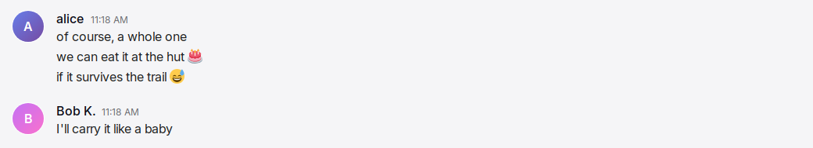
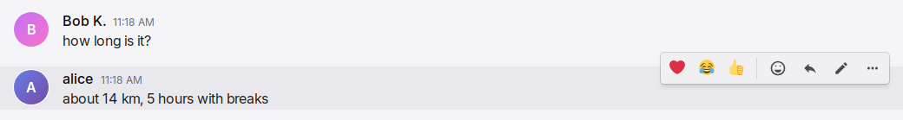
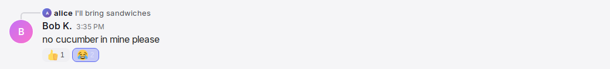
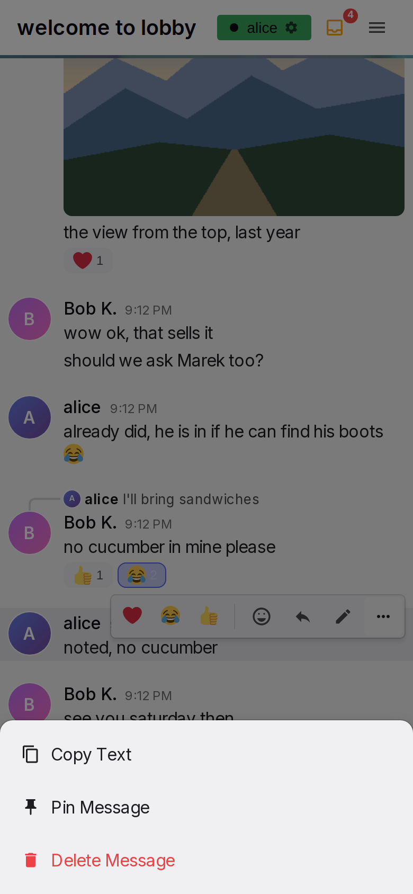

Message row and actions
A message row is one message as it appears in the conversation. The row shows who wrote the message and when, the text or media, the message it replies to, its reactions, and the actions that the reader can do on it. Rows from the same author within 30 minutes make a group under one header. The reader does all actions on a message in its row. These actions are react, reply, edit, delete, copy and open media. "Phone" on this page means a window 600 px wide or less, as in the general rules.
Anatomy




- Avatar. A 40 px circle on the left with the profile picture, or a coloured disc with the first letter of the username. It shows only on header rows. Other rows leave the avatar column empty.
- Header. The name, a bot badge if the author is a bot, and the time. It shows only on the first row of a group.
- Reply quote. A line above the header, on replies only. It shows a 16 px avatar, the original author's name and the original text on one line, two lines on a phone. A curved connector joins it to the avatar below.
- Content. The text with links and emoji, the media (images in a gallery, videos, GIFs, a voice message), or both, with the text above the media as a caption. A row with text can end with "(edited)".
- Link cards. Cards under the text, one for each link with a preview, at most five.
- Reaction pills. Pills under the content with the emoji and the count. The reader's own reactions are highlighted.
- Action bar. A bar at the top right of the row. It shows on hover or after a tap. It contains the quick reactions, Add Reaction, Reply, the GIF star on phones, Edit on own text rows, and More.
- Popups. The reaction picker and the More menu open from the bar; the delete dialog opens from the More menu. On a phone, the picker and the menu are bottom sheets.
- System line. A centred italic line: in the lobby when someone joins or leaves, and in a conversation when someone pins a message. It has no header, no actions and no hover effect.
Rules
Header and grouping
MR-01A row shows a header (avatar, name, time) when it is the first message shown, when its author is different from the author of the previous message, when it is a reply, or when 30 minutes or more passed since the previous message. Other rows show only their content, aligned to the same text column.
MR-02A header row has 17 px of space above it. Rows inside a group have no space above them.
MR-03The name is the author's display name, or the username when no display name is set. Emoji in a name show as images at text size.
MR-04A bot author has a small robot badge after its name.
MR-05The time is small and muted, on the same line as the name. For a message from today, the row shows only the time. For a message from yesterday, the row shows "Yesterday" and the time. For an earlier message from the same year, the row shows the date and the time. For an older message, the row shows the full date and the time. Rows without a header show no time. A name that is too long for the line is cut at the edge, without an ellipsis, and the time stays complete. A long name never makes the timeline scroll sideways.
MR-06Times use the user's time zone, and the date order and clock style from Settings. Until the user changes the date order and the clock style, they follow the language of the browser used at sign-up. The labels update with the clock. When midnight passes, a message from today shows "Yesterday".
MR-07The reader's own messages and other people's messages look the same. Only the available actions are different. A tap on the avatar or the name opens nothing. The profile card opens from the sidebar.
MR-08When the pointer is over a row, the row has a tint. The tint stays while the picker, menu or dialog of the row is open.
MR-09A deleted message disappears for every reader. There is no placeholder and no undo. The groups around it are formed again.
Text
MR-10Text shows as the author typed it. Line breaks are kept, and long words wrap to the next line. There is no formatting syntax and no mention syntax. Only links and emoji are transformed. Typed markup shows as text.
MR-11A message contains at most 4000 characters. This is the same limit as in the input box.
MR-12These addresses in text become links: addresses that start with http:// or https://, addresses that start with www., and bare domains that end in .com, .org, .net, .io, .dev, .app, .co, .me, .info, .edu or .gov. Punctuation at the end of a link stays outside the link. A closing bracket that balances an opening bracket in the address stays in the link, so an encyclopedia link with brackets in its address stays complete.
MR-13A link shows as the author typed it, in the accent colour. It is underlined only on hover. It opens in a new tab. An e-mail address does not become a link, and its domain does not become a link.
MR-14An edited text row ends with "(edited)" in small placeholder-coloured text.
Emoji
MR-15Emoji in text show as images from one image set, so every reader sees the same image. A skin tone variant, a flag, a keycap or a joined sequence shows as one image. The device's own emoji glyph stands in only for an image that has not arrived after a second, also without a connection, and the image replaces it when it arrives. If the device does not load an emoji image, Yap loads the image again, as for a gallery image (MR-24).
MR-16In mixed text, an emoji is 1.2 times the text size. When a message contains only emoji and whitespace, the emoji are 3 times the text size. A link or any other text in the message prevents this larger size.
MR-17The author writes a custom pack emoji as ":shortcode:". It shows as the pack image, at the same sizes. An unknown shortcode stays text. A shortcode inside a link stays text.
MR-18Emoji images in messages do not appear with a delay while the reader reads.
Link cards
MR-19A text message with links gets one preview card for each link, at most five, in text order. A message with media gets no cards, also for a link in its caption. An admin switch turns off previews for everyone. By default, previews are on.
MR-20A card shows the site name, the title and the description of the page, and a thumbnail on the right when the page has one. A card appears only when the page has a title or a description. The description is cut at 300 characters. The thumbnail comes from this server: the server copies the page's picture as a small WebP, so a reader's browser does not contact the linked site. When the server cannot copy the picture at the first read, the card shows it from the linked site, and the server does not try the copy again.
MR-21The whole card is one link that opens in a new tab. The card has an accent bar on the left. It is at most 520 px wide, and full width on a phone.
MR-22A card appears after the server reads the page, a short time after the message. When a card appears, a reader at the bottom of the list stays at the bottom. After a card shows, it stays with the message, also after a server restart. The card shows the page as it was when the server first read it; the server does not read the page again. When the first read gives no card, the server tries again an hour later. An edit that adds or removes a link adds or removes the card for that link. A message from history gets its cards in the same way. The cards appear a short time after the page loads.
MR-23When the admin switch for media caching is on, a link to a page whose video or audio the server can download shows a player instead of a card. The site name and the title show above the player. A player downloads nothing until the user starts it.
Images, videos, GIFs and voice messages
MR-24A message with media shows its text, when it has one, above the media as a caption. One image shows at its own aspect ratio. On desktop, the image is at most 400 px wide and 350 px high. On a phone, it is full width and at most 450 px high. While the image loads, a box of its final size in the sidebar colour keeps its space, so nothing moves when it arrives; the server sends the size with the message. Without a known size (a file that is gone), there is no box. If the device does not load an image, Yap loads it again after 3 s, then 10 s, then 30 s, and again when the connection returns. This applies to gallery images, GIF images and emoji images.
MR-25Several images make a gallery of square, cropped thumbnails in rows of two or three, with 4 px gaps. Two or three images make one row. Four make two and two. Five make two and three. Six make three and three. Seven make two, two and three. Eight make two, three and three. Nine make three rows of three. Ten make two, two, three and three.
MR-26A tap or click on an image opens the gallery viewer at that image. The viewer contains only the images of this message. The timeline page specifies the viewer.
MR-27Videos show one above the other, with 4 px gaps. On desktop, each video is at most 400 px wide and 350 px high. On a phone, each video is full width. A video has its poster's shape before the poster loads, so nothing moves when it arrives. A video shows its poster frame under a dark tint, with a round play icon. A tap shows the controls and starts the video. When the video ends, or is paused at the start, the tint and the icon show again over the current frame. On an iPhone, a video plays in the full-screen player of the phone.
MR-28A GIF keeps its own aspect ratio and is at most 360 px wide. A GIF is never cropped. While its size is unknown, it keeps a 240 px square space. It plays automatically, muted and in a loop. While it loads, a small spinner shows after a quarter second. A tap on a GIF opens nothing. When the GIF no longer exists, the row shows "GIF unavailable".
MR-29When the browser blocks autoplay, the next tap or key press anywhere starts every paused GIF.
MR-30A GIF has a favourite star at its top right corner. On desktop, the star shows on hover. A favourited star is gold and always shows. A click on the star changes the favourite state and nothing else. On a phone, the corner star only marks a favourite. The user changes the favourite state with the star in the action bar.
MR-31On hover, a GIF uploaded to Yap shows "via {name}" at its bottom left corner. The name is the display name of the person who uploaded the GIF. A GIF from the provider shows no name.
MR-76A voice message shows a player: a round play button in the accent colour, the bars of the recording, the length as m:ss, and a speed button. The player is 320 px wide on desktop and full width on a phone. Play starts the message, and the button becomes a pause button. While the message plays, the bars fill from the left in the accent colour and the time shows the elapsed time. At the end, the bars and the time return to the start. A tap on the bars plays from that point. Only one voice message plays at a time: a play on another one stops the first. The speed button cycles through 1×, 1.5× and 2×. The speed applies to every voice message on the device and is kept. A voice message has no caption and no link cards.
MR-79A message from a deleted account (AD-40) shows "{username} (deleted)" as its author, with the default picture. Its reactions and the quotes of replies to it name the author the same way. The profile card of such an author shows the name and nothing else.
Reply quote
MR-32A reply shows the quote line above its header. The quote line contains a 16 px avatar, the original author's display name, and the original text. The text is one line with an ellipsis, and two lines on a phone. For an original with media and no caption, the quote shows "Click to see attachment". For a voice message, the quote shows "Voice message". The quote shows emoji as small images and shows no links. The quote changes when the original is edited.
MR-33A curved connector joins the avatar of the quote to the avatar of the reply. A reply always starts a group, so it always has a header.
MR-34A tap or click on the quote scrolls the list to the original message, centred, and tints the original for two seconds. When the original is not loaded yet, it shows in a window of messages around it (TL-41). A refusal shows its reason at the quote for two seconds, with the texts of SH-49.
MR-35When the original message is deleted, the quote shows "Original message unavailable". The quote shows the same text for an original older than the messages the server loaded at its start (AD-03). The connector stays. A tap on the quote does nothing.
MR-36While the pointer is over the quote, the action bar is hidden so that the quote stays readable.
MR-37While the user writes a reply to a message, that message has an accent tint. See Input box.
Reactions
MR-38Reactions show as pills under the content. Each pill shows the emoji at 18 px and the number of people who reacted. The pills are in the order in which each emoji was first used on the message. The pill of a reaction that the reader gave is highlighted with the accent colour.
MR-39The tooltip of a pill shows the display names of the people who reacted, in the order of their reactions.
MR-40A tap or click on a pill adds the reader's reaction with that emoji, or removes it when the reader already has it. The change shows immediately, before the server answers. See General rules.
MR-41The action bar starts with three quick reactions. These are the three emoji that the reader uses most in reactions. When there are fewer than three, ❤️, 😂 and 👍 fill the set until there are three. Only reactions count. Emoji typed into messages do not change the quick set.
MR-42Add Reaction opens the emoji picker for this message, with search, recent emoji, the custom packs and the categories, as on the pickers page. A pick closes the picker and adds or removes that reaction. On desktop, the picker opens below the button. When there is no space below, it opens above the button. It always stays inside the window. On a phone, the picker is a bottom sheet.
MR-43While the picker is open, the row keeps its action bar and its tint. A tap outside the picker, or Escape, closes the picker and does nothing else.
MR-44A reaction also moves the emoji to the front of the reader's recent emoji.
MR-45All people who can see a message can react to it. This includes their own messages, and rooms where they have no permission to write. There is no limit on reactions. System lines do not accept reactions.
Action bar
MR-46On desktop, the bar shows at the top right of the row while the pointer is over the row. It also shows while one of its buttons has keyboard focus. It stays while the picker, menu or dialog of the row is open. It does not show on system lines or while the user edits the row.
MR-47The buttons are in this order: the three quick reactions, a divider, Add Reaction, Reply, the GIF star on phones, Edit on the reader's own text rows, More. More is present when the row has text to copy, when the row is the reader's own, or when the reader may pin messages in the conversation (MR-77).
MR-48The icons are 18 px. The Add Reaction icon is 20 px. The buttons get a tint on hover and become slightly smaller while pressed.
MR-49Reply opens the reply bar in the input box and moves focus into the draft in the same tap. See Input box.
MR-50On a touch screen, a tap on a row shows its bar. Only one row shows a bar at a time. The tap that shows the bar also acts on the tapped item: a link opens, a pill toggles, an image opens the viewer. The bar appears after the tap, never under the finger. A scroll gesture does not show a bar.
MR-51On a touch screen, the bar is hidden 5 s after the last touch in the row, or after the list scrolls more than 50 px. Touches in the picker, menu or dialog of the row count as touches in the row. The tap that closes the picker, the menu or the dialog is also a touch in the row. The bar is never hidden while one of them is open. When the row changes while its bar shows, for example when a reaction arrives, the bar stays. An open picker or menu also stays. A mouse on a device with touch input uses the hover rule.
MR-52On a phone, the buttons of the bar are larger. The bar also contains the GIF star for the first GIF of the row. On a voice row, the bar sits above the row, so it never covers the player.
MR-53A long press on a row does nothing. A long press or a right click on an image opens no menu of the device. Why: users who meant to show the bar long-pressed the image and got the save menu of the device instead. The viewer has a download control (TL-24).
More menu
MR-54More opens a menu. The menu contains "Copy Text" when the row has text, "Pin Message" or "Unpin Message" when the reader may pin (MR-77), and "Delete Message" in red on the reader's own rows. On desktop, the menu is a dropdown below the button. When there is no space below, it opens above the button. On a phone, the menu is a bottom sheet over a dimmed page.
MR-55A tap outside the menu closes the menu and does not press anything under it. Escape closes the menu. A scroll does not close the menu. This includes the scroll that occurs when a phone keyboard closes.
MR-56Copy Text copies the message text as the author typed it, with shortcodes and links as text. The menu closes. There is no other feedback.
Editing
MR-57The author can edit their own text rows, and the caption of their own media rows, at any time. A media row without a caption cannot be edited. Admins cannot edit other people's messages.
MR-58Edit replaces the text with an editor in the same row. The header stays, and the media of a captioned row stays. The editor starts with the current text and looks like the input box. It grows to 200 px, then scrolls. Below the editor are "✓ Save", "✕ Cancel" and, on desktop, the hint "Enter to save · Shift+Enter for newline · Esc to cancel".
MR-59The editor gets focus, with the caret at the end. On a phone, the keyboard opens, because Edit is an action whose purpose is typing (GEN-03).
MR-60On a device without touch input, Enter saves and Shift+Enter adds a new line. On a device with touch input, Enter adds a new line. Escape cancels the edit. During input method composition, Enter and Escape do nothing.
MR-61When the text is unchanged, empty or only whitespace, Save closes the editor and changes nothing. When the text is changed, Save updates the message for every reader and adds "(edited)". The edited text contains at most 4000 characters.
MR-62Only one editor is open at a time. Edit on another row discards the draft of the first editor. While the user edits a row, its action bar is hidden. Changes from elsewhere, such as a reaction, show on the row when the editor closes, also after a reconnect. Its link cards stay visible. When the message is deleted elsewhere, the editor disappears.
MR-63Nothing typed in the editor is sent to the server before Save.
Delete
MR-64The author can delete their own messages at any time. This includes media rows. Admins cannot delete other people's messages.
MR-65Delete Message opens a dialog over the whole page. The dialog contains "Delete Message", "Are you sure you want to delete this message?", a preview of the message, and the buttons "Cancel" and "Delete". The preview shows the avatar, the name, the time, and up to three lines of text or the first image, video poster, "GIF attachment" or "Voice message". On desktop, a tip tells the user to hold Shift to skip the dialog.
MR-66Delete has focus when the dialog opens, so Enter confirms the delete. Escape, Cancel and a tap on the dimmed area cancel the delete. On a phone, the buttons are full width, one above the other, with Delete above Cancel. There is no tip on a phone.
MR-67Shift+click on "Delete Message" deletes the message immediately, without the dialog.
MR-68After a delete, the row disappears immediately for every reader. Replies to the message keep their header and show "Original message unavailable".
Pending and failed messages
MR-69When the reader sends a message, it appears immediately as a full row, faded, at the end of the list. The header rules of a normal row apply to it. It becomes a normal row when the server accepts it. Messages sent quickly keep their order.
MR-70While files upload, the pending row shows the file names, one progress bar for the message, and "Cancel upload". Cancel removes the pending message.
MR-71When a message cannot be sent, its row shows "Failed", the reason, "Retry" and "Remove". Remove deletes the message from this device only. A message that waited more than one day shows as failed.
MR-72A pending message offers Edit on text rows. Under More, it offers Copy Text and Remove. All three act on the device. A pending message offers no reactions and no Reply.
System lines and bot rows
MR-73In the lobby, a centred italic line appears when a person joins or leaves. The presence page specifies when it appears. The line shows a random text from the configured lists, with the username of the person. Invisible people get no line. The line is not stored, so a reload removes it. A window after a jump (TL-41) gets no lines: they belong after the newest message.
MR-80When a person pins a message, a centred italic line "{name} pinned a message" appears at the end of the conversation, for everyone who can read it. The line is stored with the messages: a person who opens the conversation later finds it at its place in time, and it loads with older messages. The name is the pinner's display name. The line counts as unread for nobody, and it sends no notification and no sound (NT-02). It cannot be edited, quoted or pinned, and it takes no reactions (MR-45). The message after it starts a new group with a header. An unpin shows no line.
MR-74A bot message can contain an "install it" link. The link opens the install dialog. See Offline and installation.
Without a connection
MR-75Reactions, edits, deletes, pins and the GIF star need a connection. Without a connection, these actions change nothing: a tap on a pill, a quick reaction, a pick in the reaction picker, the star, Save, Delete, Pin Message and Unpin Message. They show "Needs a connection" at the row for two seconds. Pending messages are an exception. Their Edit and Remove act on the device. Reply and Copy Text work as usual. Media that the reader saw before also opens as usual.
Pinning
MR-77A conversation has up to six pinned messages. In a direct message, both people can pin and unpin. In a room, the admin can always pin and unpin. Other people follow the room's pin setting: nobody, everyone, or a list of selected people. See Administration. A pending message cannot be pinned. The header page specifies the pin button and the panel that show the pins.
MR-78"Pin Message" pins the row for every reader, and the header's pin count changes at once. When the conversation has six pins, the server refuses with "Up to 6 pinned messages. Unpin one first.", and the text shows at the row for two seconds. "Unpin Message" removes the pin. A pin or an unpin that the server refuses is undone, and the reason shows at the row. A pin that the server accepts shows a system line (MR-80).
States
| State or trigger | Input | What the user sees |
|---|---|---|
| Same author within 30 minutes | all | One header, then rows without avatar, name or time. |
| Author change, reply, or 30 minutes passed | all | A new header with 17 px above it. |
| Pointer over a row | mouse | Row tinted, action bar at the top right. |
| Keyboard focus on a bar button | keyboard | The bar is visible. |
| Pointer over the reply quote | mouse | The bar is hidden. |
| Tap on a row | touch | The bar shows after the tap. The tapped item does its action. The bars of other rows are hidden. |
| Scroll gesture that starts on a row | touch | The list scrolls. The bar does not show. |
| 5 s without a touch, or a 50 px scroll | touch | The bar fades out. Not while a picker, menu or dialog is open. |
| Long press | touch | Nothing. |
| Tap on a pill | mouse, touch | The reader's reaction toggles immediately. The pill highlight and count change. |
| Pointer over a pill | mouse | Tooltip with the display names, in reaction order. |
| Quick reaction tap | mouse, touch | Reaction toggled immediately. |
| Add Reaction | mouse, touch | Picker below the button (desktop) or bottom sheet (phone). Row keeps bar and tint. |
| Pick in the picker | mouse, touch | Picker closes; reaction toggled; emoji moved to the front of recents. |
| Tap outside the picker, Escape | mouse, touch, keyboard | Picker closes. Nothing else happens. |
| Reply | mouse, touch | Reply bar in the input box, draft focused, row tinted. |
| More | mouse, touch | Dropdown (desktop) or bottom sheet (phone). Copy Text shows when the row has text. Pin Message, or Unpin Message on a pinned row, shows when the reader may pin (MR-77) and the row is not pending. Delete Message shows on own rows. |
| Tap outside the menu | mouse, touch | Menu closes. Nothing under it is pressed. |
| Scroll with the menu open | touch | Menu stays open. |
| Copy Text | mouse, touch | Text copied as typed; menu closes. |
| Edit | mouse, touch | Editor in the row, caret at the end, bar hidden. Phone: the keyboard opens. |
| Enter in the editor | keyboard, device without touch | Saves. |
| Enter in the editor | keyboard, device with touch | Newline. |
| Escape in the editor | keyboard | Cancels. |
| Save, unchanged or empty | all | Editor closes, message unchanged. |
| Save, changed | all | New text for everyone, "(edited)" appended. |
| Delete Message | mouse, touch | Dialog over the page with the preview; Delete focused. |
| Shift+click Delete Message | mouse | Deleted immediately. |
| Enter, Escape, tap on the dimmed area | keyboard, mouse, touch | Confirms, cancels, cancels. |
| Message deleted | all | Row disappears for everyone. Replies show "Original message unavailable". |
| Tap on the quote | mouse, touch | List scrolls to the original, centred, tinted for 2 s. Older messages load if necessary. |
| Tap on an image | mouse, touch | Gallery viewer with the images of this message. |
| Tap on a video | mouse, touch | Controls visible, video plays. On an iPhone, the full-screen player opens. |
| Video ends | all | Tint and play icon show again over the current frame. |
| GIF loading | all | Spinner after 0.25 s. |
| Autoplay blocked | all | The next tap or key press starts all GIFs. |
| Pointer over a GIF | mouse | Corner star and "via {name}". |
| Corner star tap | mouse | Favourite toggled; nothing else. |
| Bar star tap | touch | Favourite toggled; nothing else. |
| Play on a voice message | mouse, touch | The message plays. The bars fill, the time counts. Another voice message that played stops. |
| Tap on the bars | mouse, touch | The message plays from that point. |
| Speed button | mouse, touch | The next speed: 1×, 1.5×, 2×. Every voice message shows it. |
| Link in text | mouse, touch | Opens in a new tab. |
| Card appears | all | Card under the text. A reader at the bottom stays at the bottom. |
| Own message sent | all | Faded full row at the end, immediately. |
| Message accepted | all | Row becomes normal. |
| Send failed | all | "Failed", reason, Retry, Remove. |
| Files uploading | all | File names, progress bar, "Cancel upload". |
| No connection, reaction, star, Save or Delete | all | Nothing changes. "Needs a connection" at the row for 2 s. |
| Someone joins or leaves the lobby | all | Centred italic system line. |
| Someone pins a message | all | Centred italic system line "{name} pinned a message", kept in the history. No count, no notification, no pill. An unpin shows nothing. |
Wording
| Where | Text |
|---|---|
| Edited marker | "(edited)" |
| Avatar tooltip | the display name |
| Bot badge tooltip | "Bot" |
| Bot install link | "install it" |
| Time, yesterday | "Yesterday {time}" |
| Quote of a media-only original | "Click to see attachment" |
| Quote of a voice message | "Voice message" |
| Voice message player | "Play voice message"; "Playback speed"; "1×", "1.5×", "2×"; the time as m:ss |
| Quote of a deleted original | "Original message unavailable" |
| Image alt text | "Uploaded image" |
| GIF missing | "GIF unavailable" |
| GIF sender | "via {name}"; tooltip "Uploaded by {name}" |
| GIF star tooltips | "Add to favorites"; "Remove from favorites" |
| Bar tooltips | the emoji itself; "Add Reaction"; "Reply"; "Edit"; "More" |
| Video play control | "Play video" |
| More menu | "Copy Text"; "Pin Message"; "Unpin Message"; "Delete Message" |
| Pin refusals | "Up to 6 pinned messages. Unpin one first."; "You cannot pin messages here."; "You cannot unpin messages here."; "A system line cannot be pinned." |
| System line refusals | "A system line cannot be edited."; "A system line cannot be quoted."; "System lines do not accept reactions." |
| Editor | "✓ Save" (tooltip "Save"); "✕ Cancel" (tooltip "Cancel"); "Enter to save · Shift+Enter for newline · Esc to cancel" |
| Delete dialog | "Delete Message"; "Are you sure you want to delete this message?"; "GIF attachment"; "Voice message"; preview alt texts "Attachment", "Video attachment"; "Pro tip: hold Shift when deleting to skip this confirmation." with Shift as a keycap; "Cancel"; "Delete" |
| Pending row | "Cancel upload"; "Failed"; "Retry"; "Remove"; the reason is the server's refusal text, "Waited more than a day" after one day, or "Could not send" when there is none |
| Reaction tooltip | the display names joined with ", " |
| Without a connection | "Needs a connection" |
| Lobby join lines (configured; defaults) | "{0} just dropped", "{0} is here", "{0} arrives", "W {0} joined", "{0} spawned in", "{0} returns" |
| Lobby leave lines (configured; defaults) | "{0} dipped", "{0} ghosted us", "{0} went to touch grass", "{0} logged off", "{0} left on read", "{0} has left the chat", "rip {0}" |
| Lobby lines when the lists are missing | "{0} joined the chat"; "{0} left the chat" |
| Pin line | "{name} pinned a message" |
Related
- Input box for sending, the reply bar and the pending row's origin.
- Emoji and GIF pickers for the reaction picker's content.
- Timeline and media for the list, scrolling, the gallery viewer and loading older messages.
- Settings for the time zone, date order and clock style.
- Administration for the link preview and media caching switches.
- Offline and installation for queued messages and installing Yap.
- Presence for the lobby join and leave lines.